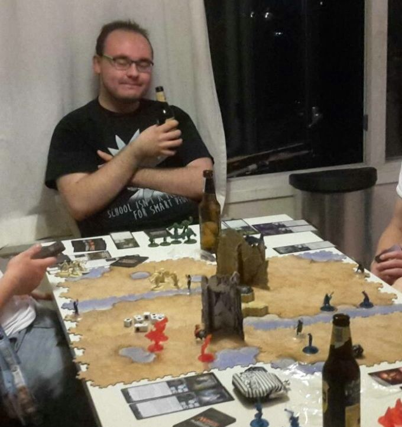
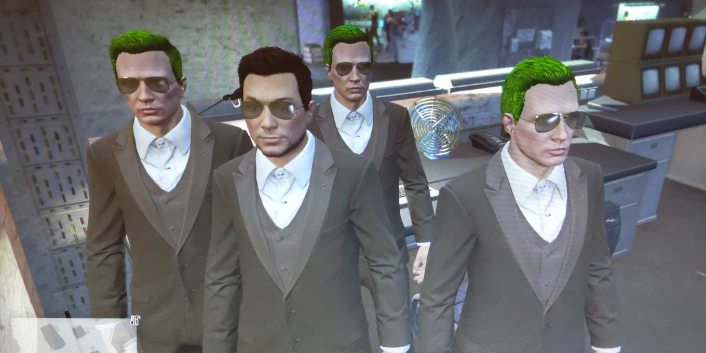
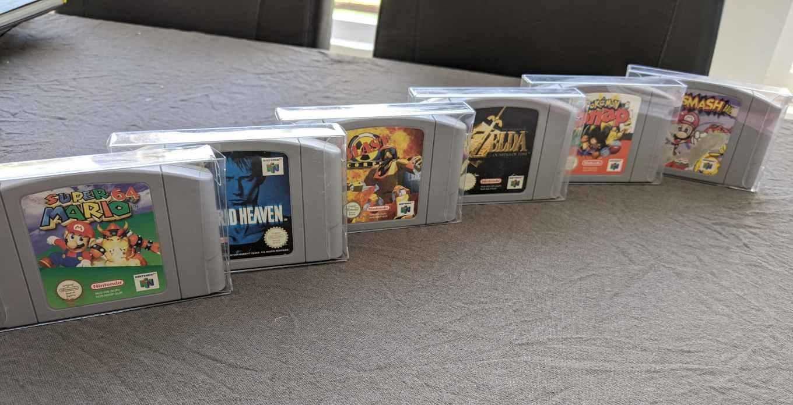
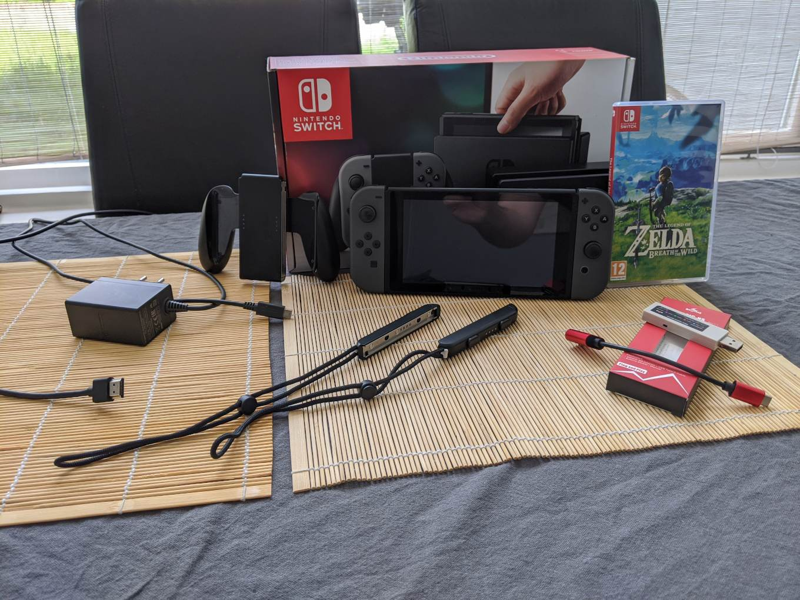
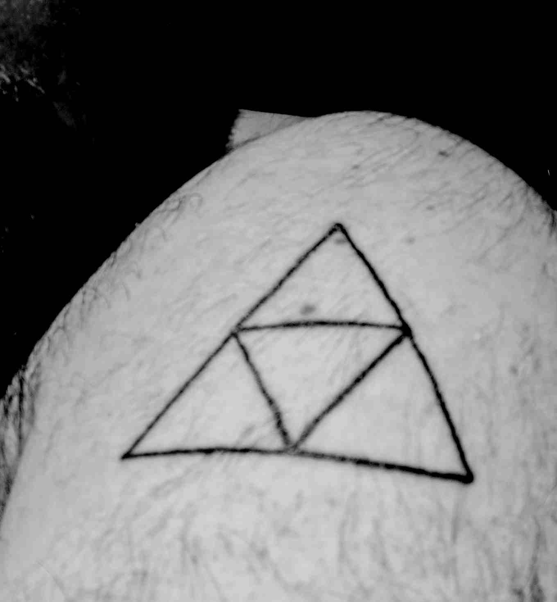
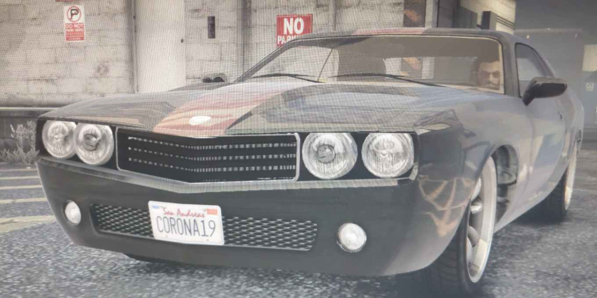
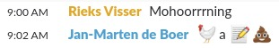

[State: research]
Symbiont is a purpose-built language for expressive data manipulation.
It is named so, because it relies on a
mutualistic symbiotic relationship
with a host language.
I love playing games. While I enjoy a bit of solitary time, most
games I love are played with friends or foes.
From DnD to a
TCG and from
Zelda to
GTA V, I'm in when you are.

Me and a few like-minded individuals, playing
Magic: Arena of the Planeswalkers

GTA 5 glitch: doppelgängers with radioactive hair color

Nintendo 64 game cartridges
Mario 64, Hybrid Heaven, Blast Corps, OoT, Pokémon Snap, Smash Bros.
The Wii U console, some peripherals and game discs

The Switch console, some peripherals and a game disc

The first iteration of my Triforce tattoo
on my left upper arm

GTA 5: Muscle car with
licence plate CORONA19
Sadly, I've had to say goodbye to my Nintendo collection. Even
though I don't own those games and consoles anymore, they are
still a big part of what defines me.
… a weirdo

You may call me
nerd,
geek or tell me I'm a
bit weird. And you're probably right about all of those.